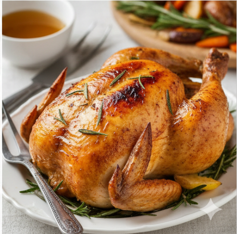

Roast Chicken

Description
A classic roast chicken is a testament to the power of simple, high-quality
ingredients. A whole chicken is seasoned—often with just butter, salt, pepper,
and aromatics like lemon, garlic, and rosemary—and roasted at a high temperature.
The goal is to achieve a golden-brown, crackling skin while keeping the meat
underneath tender and succulent.
Ingredients
- Main: 1 whole chicken (4–5 lbs), patted dry
- Fat: 4 tbsp softened unsalted butter or olive oil
- Aromatics: 1 halved lemon, 1 head of garlic, 1 small yellow onion
- Herbs: Fresh sprigs of rosemary, thyme, and sage
- Seasoning: Kosher salt and freshly ground black pepper
- Vegetable Bed: 1 lb baby potatoes, 3 large carrots, 2 stalks celery
Steps
- Preheat your oven to 425°F. Pat the chicken very dry with paper towels, as moisture
on the skin prevents crisping.
- Stuff the cavity with the lemon, garlic, onion, and fresh herbs.
- Rub the softened butter or oil all over the outside of the bird and season
extremely generously with salt and pepper.
- Place the chopped root vegetables in the bottom of a roasting pan and
nestle the chicken on top of them.
- Roast for 1 hour to 1 hour and 15 minutes, or until the juices run clear
and the thigh temperature reaches 165°F.
- Let the chicken rest for at least 15 minutes before carving to allow the
juices to redistribute through the meat.
Home